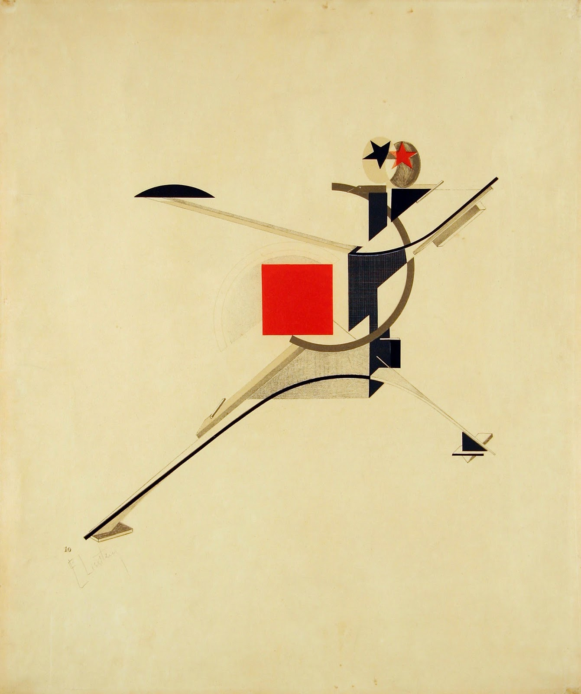

Russian constructivism
1913 to 1935.In the early 1900s, several revolutionary directions in art and design began, for later to develop into modernism, which today we know so well from the majority of the design we surround ourselves in our everyday lives.But at that time there were thoughts that art should not be reserved for the upper class. That art can be constructed, abstract, without ornaments, new and provocative – and for the people.